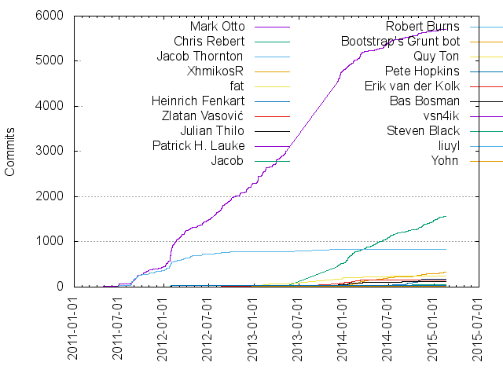

Authors
| Author | Commits (%) | + lines | - lines | First commit | Last commit | Age | Active days | # by commits |
|---|
| Mark Otto | 5708 (52.50%) | 495986 | 484199 | 2011-04-27 | 2015-02-17 | 1391 days, 21:37:45 | 702 | 1 |
| Chris Rebert | 1571 (14.45%) | 31325 | 44771 | 2012-02-04 | 2015-02-17 | 1108 days, 0:57:51 | 386 | 2 |
| Jacob Thornton | 829 (7.62%) | 104082 | 77081 | 2011-05-03 | 2013-08-18 | 838 days, 3:20:21 | 170 | 3 |
| XhmikosR | 330 (3.04%) | 39741 | 26611 | 2013-08-24 | 2015-02-16 | 541 days, 1:19:45 | 149 | 4 |
| fat | 246 (2.26%) | 39666 | 23771 | 2012-10-29 | 2014-10-02 | 703 days, 1:12:14 | 49 | 5 |
| Heinrich Fenkart | 173 (1.59%) | 20963 | 3239 | 2013-09-20 | 2014-12-15 | 451 days, 12:16:17 | 61 | 6 |
| Zlatan Vasović | 160 (1.47%) | 7188 | 7600 | 2013-08-17 | 2014-12-31 | 501 days, 9:59:11 | 101 | 7 |
| Julian Thilo | 126 (1.16%) | 2993 | 1582 | 2013-04-09 | 2014-12-12 | 611 days, 14:23:56 | 79 | 8 |
| Patrick H. Lauke | 49 (0.45%) | 3715 | 3361 | 2013-01-02 | 2015-02-04 | 762 days, 16:58:56 | 22 | 9 |
| Jacob | 47 (0.43%) | 0 | 0 | 2013-06-27 | 2014-10-09 | 468 days, 22:19:48 | 29 | 10 |
| Robert Burns | 34 (0.31%) | 341 | 419 | 2013-03-30 | 2013-06-02 | 64 days, 7:40:45 | 13 | 11 |
| Bootstrap's Grunt bot | 33 (0.30%) | 114 | 165 | 2014-12-02 | 2015-02-17 | 76 days, 18:49:52 | 23 | 12 |
| Quy Ton | 32 (0.29%) | 137 | 126 | 2012-12-05 | 2014-11-30 | 724 days, 16:16:00 | 23 | 13 |
| Pete Hopkins | 30 (0.28%) | 427 | 235 | 2012-01-24 | 2012-01-31 | 6 days, 21:11:23 | 5 | 14 |
| Erik van der Kolk | 26 (0.24%) | 331 | 159 | 2012-08-18 | 2012-08-18 | 8:12:06 | 1 | 15 |
| Bas Bosman | 25 (0.23%) | 400 | 136 | 2013-08-12 | 2014-12-08 | 482 days, 16:21:49 | 17 | 16 |
| vsn4ik | 24 (0.22%) | 73 | 86 | 2013-08-04 | 2015-02-16 | 561 days, 4:21:33 | 18 | 17 |
| Steven Black | 22 (0.20%) | 94 | 101 | 2013-08-29 | 2013-10-16 | 47 days, 9:00:57 | 9 | 18 |
| liuyl | 21 (0.19%) | 175 | 187 | 2013-06-13 | 2013-08-18 | 66 days, 0:46:22 | 16 | 19 |
| Yohn | 21 (0.19%) | 99 | 47 | 2012-12-20 | 2013-02-06 | 48 days, 1:45:37 | 6 | 20 |
These didn't make it to the top: Stephen Edgar, Ross Allen, Guillermo González de Agüero, Tom Pietschker, Tobias Lindig, Jon Stevens, syed, ggam, wangsai, fat-kun, Fabien, Geremia Taglialatela, mrmrs, William Franceschine, Luis Aleman, jody tate, billy gates, Purwandi, Kevin Kirsche, James Friend, Chris Aniszczyk, Andreas Cederström, ♒∆✝, kostyatretyak, Lipis, Jacob Rask, Burak Tuyan, Artur Kwiatkowski, William Ghelfi, Vickash Mahabir, Silumesii Maboshe, Kevin Suttle, James Holland, Guillaume Gautreau, Elvis Ratzlaff, Christian, Chris Gunther, Blake Embrey, Aristeides Stathopoulos, Thomas Welton, Panayiotis Lipiridis, Nicolas Dudebout, John Wright, Hayden Bleasel, saiwang, ctalkington, Vinay Raghu, Rod Vagg, Nicklas Ansman Giertz, Mark, Marcus Bointon, Giuliano Velli, Francis Brunelle, Bryan Petty, Bradly Feeley, Bass Jobsen, Andreas Cederström, Alex Kalicki, tobz, sankage, pthrasher, mo, marsuboss, Zac Echola, Supergibbs, Rakhat Jabagin, RJ Regenold, Nicole, Nicolas Gallagher, Nick Schonning, Mike Greiling, Martin Bean, Jesse Hu, Jeff Adams, Ivan Khalopik, Gaëtan Muller, François Robichet, Bastien, nextgenthemes, meleyal, jackson, geedmo, amid2887, Zulfiqar Ali, Yulong Liu, Waynn Lue, TJ Rana, Synchro, Stuart P. Bentley, Soheil Behnezhad, Simon, Shawn Price, Sean Dwyer, Rogério Yokomizo, Rahul Nawani, Piotrek Okoński, Pamela Fox, Olivier Laviale, Nirav Sanghani, Nikita Rushmanov, Nicole Bartelt, Marcus Schwab, Luke McDonald, Luis Hdez, Loic Bistuer, Kyle, Kevin Jannis, Kevin Ingersoll, Jørgen Borgesen, Jonathan Camile, Joel Kuzmarski, Javier Eguiluz, Gleb Mazovetskiy, Gabriele Cirulli, Evan Meagher, Edgar Schnueriger, Dominic Barnes, David Haywood Smith, Daijiro Wachi, Cédric Aellen, Charles B Johnson, Chad Smith, Ben Oakes, Arnold Daniels, Aaron Stacy, سید مرتضی موسوی, Дмитро Будник, tomByrer, soundarapandian, saranya.r, nkryptic, m.seegmüller, kylase, joep.joosten@ihomer.nl, jhr007, iatek, hillai, ejain, eirikb, dzwillia, al // @idest, Wing, Vincent Chan, UTCWebDev, Tunghsiao Liu, Thomas Coleman, Thierry Goettelmann, Stefan Neculai, Seth Lilly, Sam Blowes, Ross Nye, Ross Johnson, Roland Warmerdam, Rodrigo Willrich, Roberto - phproberto, Raul Riera, Pierre Guilbert, Phil Hughes, Phil Freo, Paul Tyng, Oliver Schmidt, Nicole Sullivan, Nick O'Donoghue, Nathan Bridgewater, Milos Gavrilovic, Mike Robinet, Mike Francis, Mickael Perraud, Michael J., Max F. Albrecht, Matthew Pennell, Matt Morgan, Markus Maga, Mark Figueredo, Mario Bonito, Marc Chung, Luke Page, Linmiao Xu, Lech Wilczynski, LFeh, Kyle Robinson Young, Kevin Martensson, Kevin Attfield, Katie Zhu, KAWACHI Takashi, Justin John Mathews, Joseph Price, Jordan Hess, Jonathan Ingram, Jon Schlinkert, Joah Gerstenberg, Jayanth Koushik, Jason Wieland, Jason Diamond, Jake Buob, Ilya Radchenko, Han Lin Yap, Gordon Woodhull, Gil Barbara, Geoff Young, Frederico Carvalho, Frederick Marcoux, Fred Delrieu, Florian Weber, Erik Michaels-Ober, Eric Baer, Emanuele Gaspari, Dominik Tobschall, Dmitriy Budnik, Dean Taylor, Danny Keane, Cyrus Stoller, Collin Donahue-Oponski, Christopher Canipe, Chris Ziogas, Chris Kankiewicz, Chris Hynes, Carl Porth, Cameron Little, Brian Surowiec, Brian Nelson, Brian Campbell, Breno Calazans, Braden Whitten, Ben Ogle, Andrey Popp, Andrei Railean, Allen Bargi, Alexey, Alexandre Magno, Alex Peattie, Alec Rust, AJ Acevedo, zhongwei99, yury, westurner, wangshishuo, thr3-arendt, thomaswelton, thgh, stoudenmire, sgamel, samme, robertgentel, rilian, rhaase, ravage84, raphaelz, pseidemann, pickypg, philippm, patricker, nkav, mrasscha, moodyroto, mfansler, mdxs, maxwellium, lucaflisi, liias, leonardovcid, kriansa, juniorconte, jonschlinkert, jonahss, johvik, jlaswell, jeremydenoun, jeonghwan, j.corns, herom, hero-m, hebbet, gribelu, gitname, gitaeks, frntz, faceach, eduardo luttner, dmitriybudnik, burningTyger, breaddevil, boomsb, bcullman, bcarrell, baslr, awebdeveloper, avindra, au-phiware, asmega, alienlebarge, ahoereth, aentan, adamjacobbecker, Zhipeng Liu, Zac Wasielewski, William Oliveira, Weston Platter, Weslly Honorato, Wesley Overdijk, Vitalii Nagara, Vic, Valera Rozuvan, Ufuk Avcu, UTGuy, Tyler Cipriani, Troy Murray, Trent Steel, Travesty3, Torsten Baldes, Topsitemakers, Tony Narlock, Tomás Arribas, Thomas McDonald, The Big Red Geek, Thanos Lefteris, Tarsis Azevedo, TannerNMO, Takayama Fumihiko, Tadeu Zagallo, TJ, Swaagie, Suleman Chikhalia, Steven Bassett, Steve S, Steve Purcell, Steve Faulkner, Stephen Rees-Carter, Stephan Groß, Stefan Sundin, Sojaner, Slavi Pantaleev, Sindre Sorhus, Simon Charette, Simon Boudrias, Siecje, Siarhei Khilko, Shaun Dychko, Seth Faxon, Sebastian Podjasek, Sebastian Nowicki, Scott Watermasysk, Scott Plumlee, Scott Gonyea, Sammy Larbi, Sam Soffes, Sam Roth, Sam Carlton, Sam Bowler, Salman Javed, Ryan Pavlik, Rustin Wollin, Rufo Sanchez, Ruben Stolk, Rouven Weßling, Ross Laird, Rory O’Kane, Rohan Jain, Robin Lewis, Roberto Poo, Robert McLaws, Robert Dodd, Rob Fletcher, Rhodry Korb, Renault John Lecoultre, Ramiro Morales, Rafaël Blais Masson, Phillip Alexander, Philip Arndt, Peter Wilmott, Peter West, Peter Blazejewicz, Pere Orga, Pedro Pereira, Pavel Demyanenko, Paul Vorbach, Paul McLanahan, Paul Kauders, PatrickJS, Patrick Robertson, Pascal Borreli, Ore Landau, Octavian Damiean, ORiON-, Noah Blon, Ninir, Nikolay Shebanov, Nikhil Dabas, Nik Cubrilovic, Nick Veys, Nick Colley, Nicholas Westlake, Nathan Muir, Nate Eagleson, Natansh Verma, Nano, Nadan Gergeo, Môshe van der Sterre, Mu-An Chiou, Mohnish Thallavajhula, Mladen Plavsic, Minku Lee, Mike Reid, Mike Pagé, Mikael Brevik, Michael Silber, Michael Shafrir, Michael Rotoloni, Michael Fellinger, Melvin, Maxim Pshenichnikov, Maxim Kaschenko, Max Kramer, Max Edmands, Max, Maurice Wahba, Maurice Fonk, Matthew Leffler, Matt Smith, Mathias Ose, Martynas, Martin Stein, Martin Hansen, Marti Kaljuve, Mark Reeder, Marco Wise, Marcel Korpel, Marcel Jackwerth, Marat Abdullin, Manuel Meurer, Maik Schreiber, Maarten Van Hoof, Lukáš Doležal, Luke Thomas, Luke Noel-Storr, Luke Hatcher, Lukasz Fiszer, Luis Nell, Luis Abreu, Luca Wehrstedt, Lim Chee Aun, Liam, Lewis Cowper, Leo Cassarani, Lee Penkman, Laszlo Toeroek, Kyle A. Matheny, Kurt Maine, Kurt MacDonald, Krister Kari, Kriansa, KostyaTretyak, Konstantin Kulinicenko, Koen Punt, Kevin Sawicki, Kevin O'Connor, Kevin Locke, Kevin Lisota, Kevin Granger, Kevin, Kenan Shifflett, Kasper Bøgebjerg Pedersen, Karthik Viswanathan, Karel Vuong, Kai Dorschner, Justin Patrin, Justin Dorfman, Julius Graakjær Grantzau, Julian Birch, Joshua Anderson, Josh Dague, Jonathon Leight, Jonathan Sampson, Jonathan Maron, Jonathan Knapp, Jonas Weber, Jonas Pommerening, John-Philip Johansson, John O'Nolan, Johan Steen, Joey Baker, Jochen Berger, Jiri Pospisil, Jim Webb, Jim Frode Hoff, Jesse Mandel, Jerri Christiansen, Jeroen Visser, Jeremy Martin, Jeremy Denoun, Jenn Dodd, Jeff Tickle, Jeff Nunn, Jeff Froom, Javier Martinez Fernandez, Jaume Alemany, Jason Nutter, Jason Harbert, Jari Jokinen, Jared Christensen, Jan Škrášek, Jan Panschab, Jamie Knight, James Lawrence, James Fuller, James Costian, Jake Spurlock, Jake Benilov, Jacob Fike, Ivan Malopinsky, Ivan Kurnosov, ItsJonQ, Islam Sharabash, Iqbal Kabir, Igor Rzegocki, Igor Bozato, Herman Schutte, Henrik N, Henning Hoefer, Hendy Tanata, Haukur Páll Hallvarðsson, Haralan Dobrev, Hannu Hartikainen, Haley, Guy Bedford, Guo Du, Guillaume Smet, Gregory Pakosz, Gregory HOULLIER, Greg Roodt, Greg Raven, Graham Conzett, Godric, Gianfranco Palumbo, Germán M. Bravo, Gerhard, Gerald Monaco, Gavin Cooper (work), Garvin, Fred Sauer, Francisco arenas, Florian Pfitzer, Felix Hirschfeld, Fabian Golle, FLOKER, Erwan Jegouzo, Erlend Halvorsen, Erik Flowers, Eric Thomas, EngineerGio, Emmanuel Gautier, Eduardo, Eden, Drew Goodwin, Donald Pipowitch, Divya Manian, Dirk Ginader, Dionysios G. Arvanitis, Derek Kent, Denis Gonchar, Demian Ferreiro, Davide Bellini, David Scherer, David Nguyen, David N, David Hirtle, David, Dave Wasmer, Dave DeSandro, DarDar, Daniel Nixon, Daniel Niccoli, Daniel Liuzzi, Daniel Juhl, Daniel Hoelbling, Daniel Erickson, Daniel Bøndergaard, Daniel, Dan Silver, Dan Dascalescu, Dan Course, DaSch, Cyril Jouve, Corey Innis, Clay Diffrient, ClausH, Cina S., Cina S, Christophe Coevoet, Christian Nennemann, ChrisRiddell, Chris Wiederspan, Chris Sternal-Johnson, Chris Seaton, Chris Riddell, Chris Lamb, Chad Moran, Cesidio Di Landa, Cecchi MacNaughton, Catalin Zalog, Case Talbot, Cary Landholt, Capi Etheriel, Can Burak Cilingir, Cameron Cundiff, Bulat Shakirzyanov, Bryan Keiren, Bruno Amaral, Brian Leonard, Brent Mulligan, Boris Serdyuk, Bohdan Ganicky, Bogdan, Bobby DeSimone, Blake Bengtson, Billy Vong, Billy Matthews, BigBlueHat - Web Manufacturer, Benjamin Lévêque, Ben-Russell, Ben Zumhagen, Ben Word, Ben Vinegar, Ben Oberkfell, Ben Newcomb, Ben Combee, Ben Alman, Bart Teeuwisse, Barryvdh, Barry vd. Heuvel, Baraa, Aurnik Islam, Attila Dobi, Ashley Dawson, Artem Kustikov, Artem Belov, Aron Woost, Archan Luhar, Antoine Lépée, Anirvan Chatterjee, Andy Trevorah, André Cruz, Andrew Stilliard, Andrew Scofied, Andrew Saint, Andrew S. Brown, Andrew Homeyer, Andrew Disley, Andreas Jendrzey, Andreas Bovens, Alexander Prinzhorn, Alexander Pirsig, Alex Olshansky, Alex Dahl, Aleksey V. Zapparov, Aleksey V Zapparov, Alan Hamlett, Ahmad Nassri, Agustin Colchado, Adrien Cahen, Aditya Panchal, Ademaro, Addy, Adam Woodbeck, Adam Roben, Adam Conrad, Adam Bowen, Abhijit Menon-Sen, Aaron Spike, Aaron Cordovez, Aaron Borden, Aaron
Only top 20 authors shown
Only top 20 authors shown
| Month | Author | Commits (%) | Next top 5 | Number of authors |
|---|
| 2015-02 | Chris Rebert | 24 (42.11% of 57) | XhmikosR, Mark Otto, Bootstrap's Grunt bot, Kevin Kirsche, Patrick H. Lauke | 10 |
| 2015-01 | Chris Rebert | 65 (42.48% of 153) | Mark Otto, XhmikosR, Bootstrap's Grunt bot, Kevin Kirsche, Patrick H. Lauke | 14 |
| 2014-12 | Chris Rebert | 89 (56.69% of 157) | Patrick H. Lauke, Mark Otto, Bootstrap's Grunt bot, XhmikosR, Bastien | 16 |
| 2014-11 | Chris Rebert | 74 (34.74% of 213) | Mark Otto, Heinrich Fenkart, XhmikosR, Patrick H. Lauke, Julian Thilo | 18 |
| 2014-10 | Mark Otto | 61 (27.48% of 222) | Chris Rebert, Heinrich Fenkart, XhmikosR, Jacob, Panayiotis Lipiridis | 23 |
| 2014-09 | Chris Rebert | 49 (34.51% of 142) | Heinrich Fenkart, Mark Otto, vsn4ik, XhmikosR, Nicole Bartelt | 16 |
| 2014-08 | Mark Otto | 43 (36.75% of 117) | Chris Rebert, XhmikosR, Heinrich Fenkart, vsn4ik, Julian Thilo | 20 |
| 2014-07 | Chris Rebert | 96 (39.18% of 245) | Mark Otto, XhmikosR, Heinrich Fenkart, fat, Jacob | 23 |
| 2014-06 | Mark Otto | 117 (38.61% of 303) | Chris Rebert, Heinrich Fenkart, XhmikosR, fat, Bas Bosman | 30 |
| 2014-05 | Chris Rebert | 83 (49.11% of 169) | Mark Otto, XhmikosR, Mike Greiling, Jacob, سید مرتضی موسوی | 24 |
| 2014-04 | Chris Rebert | 62 (47.69% of 130) | Mark Otto, XhmikosR, jackson, Sean Dwyer, Julian Thilo | 27 |
| 2014-03 | Mark Otto | 161 (43.75% of 368) | Chris Rebert, XhmikosR, Zlatan Vasović, Julian Thilo, mrmrs | 24 |
| 2014-02 | Mark Otto | 108 (38.57% of 280) | Chris Rebert, XhmikosR, Zlatan Vasović, Julian Thilo, Heinrich Fenkart | 26 |
| 2014-01 | Chris Rebert | 179 (40.87% of 438) | Mark Otto, Julian Thilo, Zlatan Vasović, XhmikosR, Quy Ton | 35 |
| 2013-12 | Mark Otto | 303 (55.09% of 550) | Chris Rebert, fat, XhmikosR, Zlatan Vasović, Tobias Lindig | 38 |
| 2013-11 | Mark Otto | 76 (41.76% of 182) | Chris Rebert, Zlatan Vasović, Julian Thilo, Ross Allen, Tobias Lindig | 36 |
| 2013-10 | Mark Otto | 141 (51.09% of 276) | Chris Rebert, Zlatan Vasović, Steven Black, Julian Thilo, Geremia Taglialatela | 27 |
| 2013-09 | Mark Otto | 153 (44.09% of 347) | Chris Rebert, Zlatan Vasović, Steven Black, XhmikosR, Julian Thilo | 48 |
| 2013-08 | Mark Otto | 599 (58.84% of 1018) | Chris Rebert, fat, Jacob Thornton, ggam, Guillermo González de Agüero | 98 |
| 2013-07 | Mark Otto | 325 (57.93% of 561) | Chris Rebert, fat, Jacob Thornton, liuyl, syed | 53 |
| 2013-06 | Mark Otto | 145 (66.51% of 218) | Chris Rebert, Julian Thilo, Aristeides Stathopoulos, Robert Burns, marsuboss | 33 |
| 2013-05 | Mark Otto | 158 (67.81% of 233) | fat, Robert Burns, William Ghelfi, Jacob Thornton, Blake Embrey | 23 |
| 2013-04 | Mark Otto | 119 (61.34% of 194) | Stephen Edgar, Robert Burns, Fabien, Artur Kwiatkowski, Tom Pietschker | 22 |
| 2013-03 | Mark Otto | 149 (86.63% of 172) | Robert Burns, mo, pickypg, Waynn Lue, Ufuk Avcu | 17 |
| 2013-02 | Mark Otto | 177 (77.97% of 227) | fat, Tom Pietschker, fat-kun, jody tate, Yohn | 13 |
| 2013-01 | Mark Otto | 185 (73.71% of 251) | William Franceschine, Vickash Mahabir, Patrick H. Lauke, Guillaume Gautreau, Yohn | 25 |
| 2012-12 | Mark Otto | 139 (64.95% of 214) | fat, Yohn, fat-kun, Chris Rebert, Quy Ton | 19 |
| 2012-11 | Mark Otto | 129 (88.97% of 145) | Zulfiqar Ali, Bradly Feeley, amid2887, Trent Steel, Tony Narlock | 14 |
| 2012-10 | Mark Otto | 71 (65.74% of 108) | Jacob Thornton, fat, billy gates, Bradly Feeley, Dmitriy Budnik | 15 |
| 2012-09 | Mark Otto | 134 (80.72% of 166) | Jacob Thornton, ♒∆✝, Carl Porth, Brian Campbell, amid2887 | 20 |
| 2012-08 | Mark Otto | 191 (69.71% of 274) | Erik van der Kolk, Jacob Thornton, tobz, Luis Aleman, Andreas Cederström | 28 |
| 2012-07 | Mark Otto | 138 (78.41% of 176) | Jacob Thornton, ♒∆✝, Jon Stevens, Roberto - phproberto, Purwandi | 16 |
| 2012-06 | Mark Otto | 112 (72.26% of 155) | Jacob Thornton, Jon Stevens, Marcus Schwab, alienlebarge, Takayama Fumihiko | 14 |
| 2012-05 | Mark Otto | 55 (71.43% of 77) | Jacob Thornton, Synchro, Jørgen Borgesen, Tomás Arribas, Paul Vorbach | 11 |
| 2012-04 | Mark Otto | 72 (48.98% of 147) | Jacob Thornton, Giuliano Velli, Bryan Petty, Nirav Sanghani, Chris Aniszczyk | 14 |
| 2012-03 | Mark Otto | 168 (65.12% of 258) | Jacob Thornton, Mark, Marcus Bointon, ctalkington, TJ Rana | 22 |
| 2012-02 | Mark Otto | 241 (68.66% of 351) | Jacob Thornton, Jacob Rask, John Wright, Andreas Cederström, meleyal | 38 |
| 2012-01 | Mark Otto | 393 (58.57% of 671) | Jacob Thornton, Pete Hopkins, Burak Tuyan, Jon Stevens, Chris Gunther | 39 |
| 2011-12 | Mark Otto | 43 (53.75% of 80) | Jacob Thornton, Jonathan Ingram, Evan Meagher, Erik Michaels-Ober, Troy Murray | 10 |
| 2011-11 | Jacob Thornton | 54 (48.21% of 112) | Mark Otto, Rod Vagg, Silumesii Maboshe, Raul Riera, Martin Bean | 17 |
| 2011-10 | Mark Otto | 102 (73.91% of 138) | Jacob Thornton, Silumesii Maboshe, Jeff Adams, Chris Aniszczyk, kriansa | 11 |
| 2011-09 | Mark Otto | 128 (50.79% of 252) | Jacob Thornton, pthrasher, Aaron Stacy, yury, asmega | 17 |
| 2011-08 | Jacob Thornton | 128 (56.89% of 225) | Mark Otto, sankage, David Haywood Smith, Chris Aniszczyk, Matthew Pennell | 13 |
| 2011-07 | Mark Otto | 12 (50.00% of 24) | Jacob Thornton | 2 |
| 2011-06 | Mark Otto | 40 (66.67% of 60) | Jacob Thornton | 2 |
| 2011-05 | Jacob Thornton | 5 (71.43% of 7) | Mark Otto | 2 |
| 2011-04 | Mark Otto | 10 (100.00% of 10) | | 1 |
| Year | Author | Commits (%) | Next top 5 | Number of authors |
|---|
| 2015 | Chris Rebert | 89 (42.38% of 210) | Mark Otto, XhmikosR, Bootstrap's Grunt bot, Kevin Kirsche, Patrick H. Lauke | 18 |
| 2014 | Chris Rebert | 945 (33.94% of 2784) | Mark Otto, XhmikosR, Heinrich Fenkart, Julian Thilo, Zlatan Vasović | 171 |
| 2013 | Mark Otto | 2530 (59.83% of 4229) | Chris Rebert, fat, Zlatan Vasović, Julian Thilo, Jacob Thornton | 323 |
| 2012 | Mark Otto | 1843 (67.21% of 2742) | Jacob Thornton, fat, Pete Hopkins, Erik van der Kolk, Jon Stevens | 199 |
| 2011 | Mark Otto | 449 (49.45% of 908) | Jacob Thornton, Silumesii Maboshe, Chris Aniszczyk, Rod Vagg, sankage | 55 |
| Domains | Total (%) |
|---|
| gmail.com | 4026 (37.03%) |
|---|
| github.com | 2792 (25.68%) |
|---|
| rebertia.com | 1558 (14.33%) |
|---|
| twitter.com | 1340 (12.32%) |
|---|
| users.sourceforge.net | 204 (1.88%) |
|---|
| users.noreply.github.com | 100 (0.92%) |
|---|
| splintered.co.uk | 49 (0.45%) |
|---|
| fluxbb.org | 32 (0.29%) |
|---|
| smerik.nl | 26 (0.24%) |
|---|
| brainleakage.com | 25 (0.23%) |
|---|